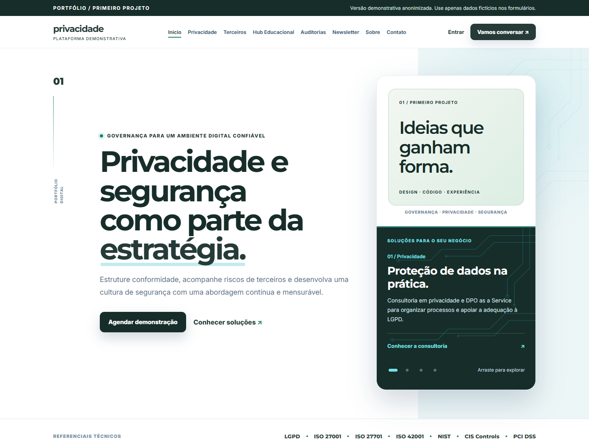
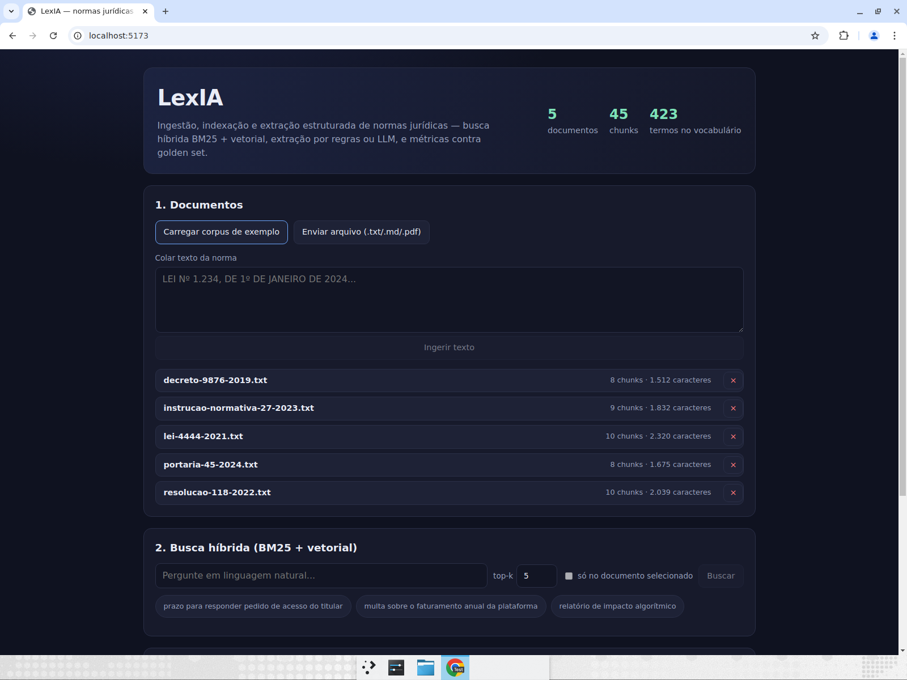

Clareza antes da complexidade
Arquitetura e interface existem para tornar o problema mais simples, não para impressionar com ruído.
São Paulo, Brasil
Sou Igor Silva, desenvolvedor Full Stack e estudante de ADS. Construo aplicações completas — da interface à segurança, dos dados aos testes — com atenção ao problema real por trás do código.
Full stack • Software • IA aplicada
01 / Abordagem
Não monto apenas telas.
Arquitetura e interface existem para tornar o problema mais simples, não para impressionar com ruído.
Autenticação, autorização, privacidade e limites operacionais entram no desenho — não no rodapé.
Testes, métricas, documentação e limitações claras sustentam cada caso apresentado.
02 / Trabalho selecionado
Uma seleção que atravessa produto para cliente, IA, educação, comércio e software desktop.

Meu primeiro projeto profissional: uma plataforma institucional com avaliação de terceiros, relatórios, áreas autenticadas e administração — publicada em uma versão segura para portfólio.

Pipeline auditável para ingerir normas, localizar trechos por busca híbrida e extrair campos jurídicos por regras ou LLM — medindo o resultado contra um golden set.
03 / Educação
Plataforma de estudos com 96 lições, editor prático e execução isolada de JavaScript e Python real no navegador.
04 / Comércio
Experiência digital para pizzaria com montador, sacola, conta do cliente, pedidos e painel administrativo.
05 / Desktop
Aplicação em Java Swing com operações científicas, memória, histórico, atalhos de teclado e suporte decimal localizado.
Quer examinar a implementação?
Todos os repositórios no GitHub03 / Trajetória
Uma carreira em construção, apoiada por experiência com clientes e prática constante em software.
Atual
Alares Internet
Comunicação, negociação, leitura de necessidades e resolução de problemas em um ambiente de telecomunicações.
2026
Plataforma de privacidade e segurança
Da organização do escopo à implementação full stack e adaptação à infraestrutura real de hospedagem.
2025 — 2028
Gran Faculdade
Formação em desenvolvimento, requisitos, bancos de dados, testes, segurança e integração entre tecnologia e negócios.
Formação contínua
04 / Competências
Ferramentas organizadas pelo que já consigo demonstrar em código, documentação e projetos funcionais.
Experiências responsivas, acessíveis e orientadas às regras reais do produto.
APIs, autenticação, persistência e rotinas para colocar a interface em operação.
Decisões verificáveis para proteger acesso, dados e comportamento da aplicação.
Extração estruturada, busca híbrida e avaliação quantitativa de resultados.
Em evolução contínua Docker · Azure · Spring Boot · Vue.js · arquitetura de software
05 / Sobre
Minha entrada em tecnologia combina duas frentes: o contato diário com pessoas e a vontade de entender como sistemas completos funcionam.
Em cada projeto, procuro atravessar as camadas. Quero compreender a necessidade, organizar o fluxo, construir uma interface clara, proteger os dados e deixar evidências de que a solução funciona. Foi assim no primeiro trabalho para cliente e é assim nos projetos que uso para ampliar meu repertório.
Hoje estudo Análise e Desenvolvimento de Sistemas e aprofundo minha atuação em desenvolvimento Full Stack, com interesse especial em back-end, segurança e inteligência artificial aplicada a problemas concretos.
06 / Contato